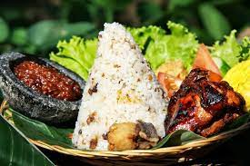

Nasi Udukl

Deskripsi
Makanan yang populer dalam keseharian orang Indonesia dari sarapan hingga makan malam.
Rasanya yang gurih dan menyenangkan ini begitu tepat dipadukan dengan bermacam-macam lauk.
Dari telur, ayam, hingga daging; nasi uduk adalah pemersatu banyak hal.
Berikut resepnya:
- beras
- santan encer
- daun salam
- batang serai
- lengkuas
- Royco Kaldu Ayam
Dan berikut langkah membuatnya:
- Rebus air dan santan,
lalu masukkan daun salam, serai, lengkuas dan Royco Kaldu Ayam.
Aduk hingga mendidih.
- Masukkan beras, masak dengan api sedang hingga air habis. Matikan api.
- Siapkan panci kukus dan tuang campuran beras ke dalam dandang.
- Kukus selama 25 menit hingga nasi matang dan tanak.
- Cara membuat bumbu kacang:
Masukkan kacang bersama cabai merah, daun jeruk,
air jeruk limau, gula dan garam ke dalam blender dan haluskan.
Tuangkan Kecap manis. Haluskan lagi hingga semua tercampur rata.
Tuangkan air matang dan aduk hingga rata.
- Nasi uduk siap disajikan dengan taburan bawang goreng,
bersama bahan pelengkap sesuai selera,
seperti tahu, tempe goreng, dan telur dadar